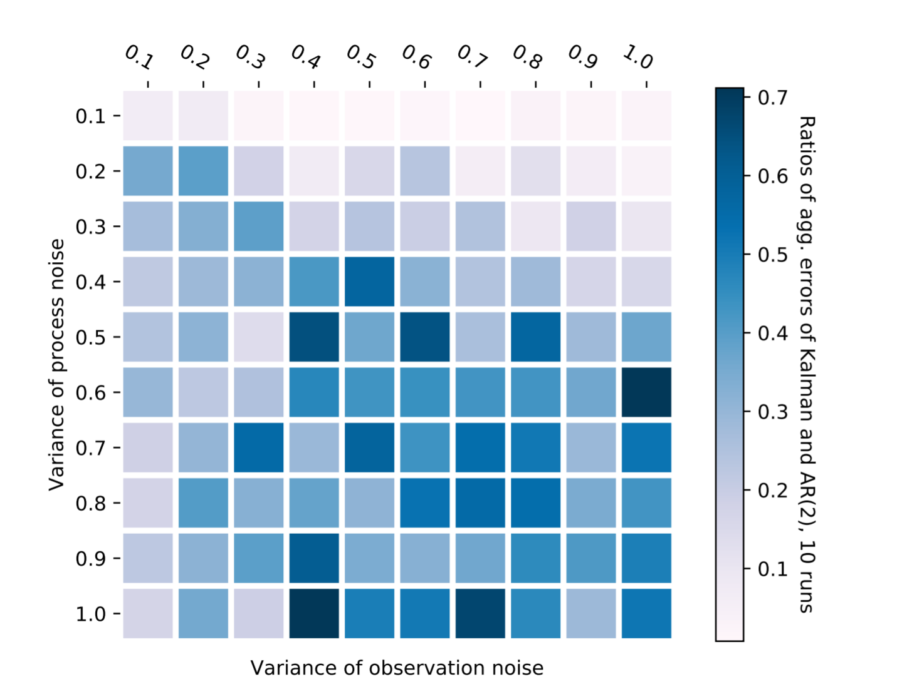
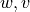
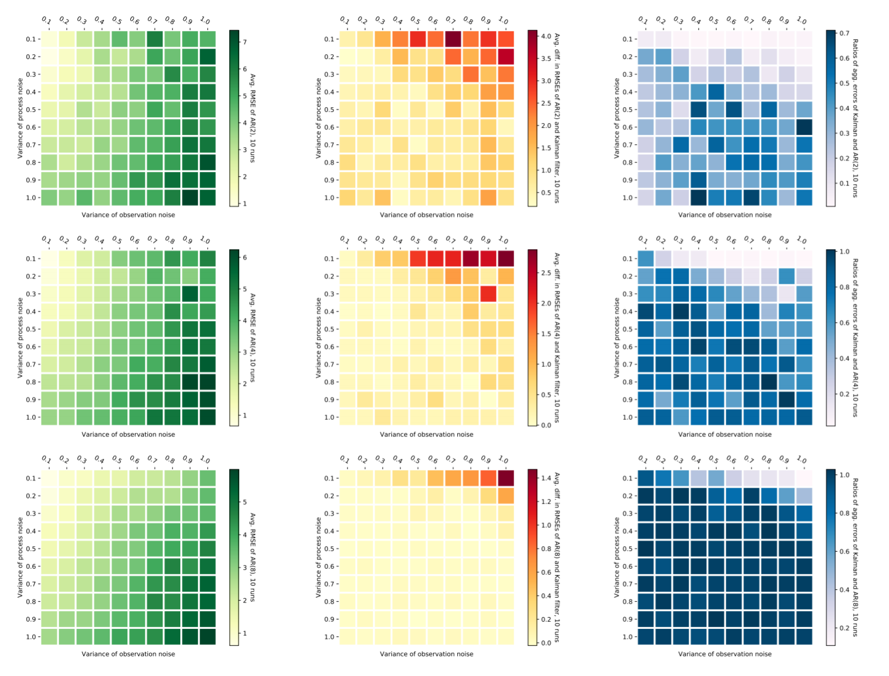
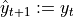
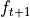
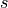
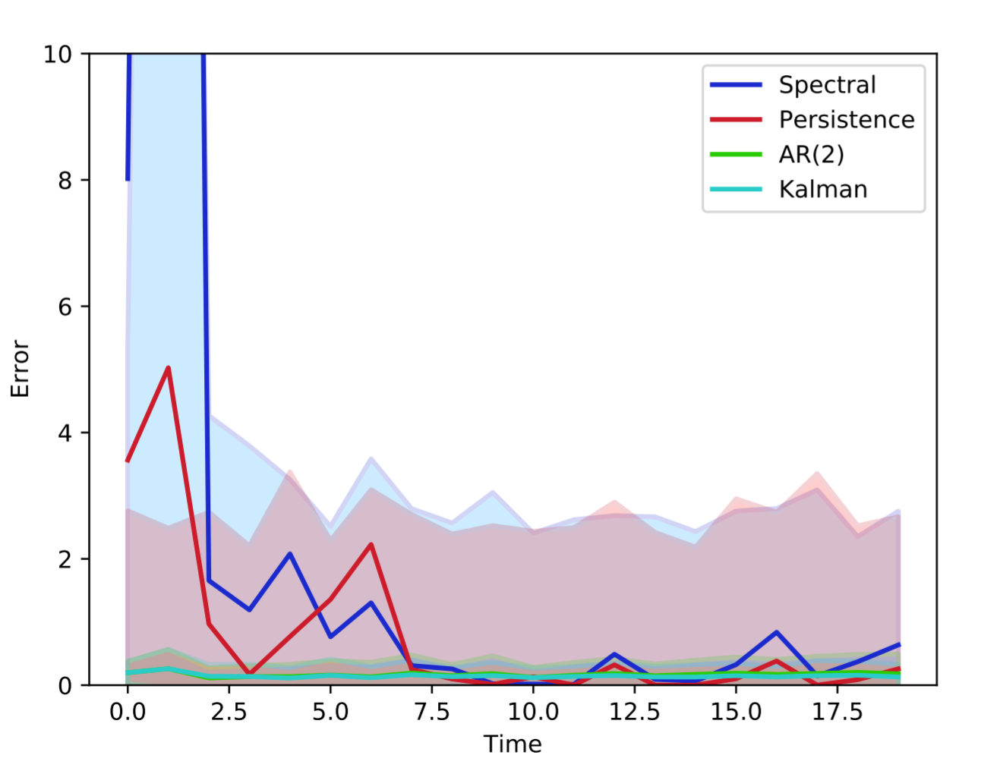
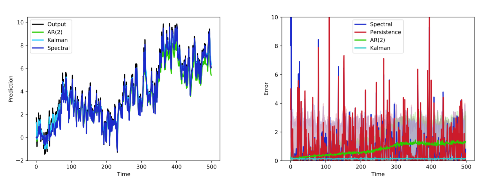

LDS package¶
Subpackages¶
- LDS.LDS package
- Subpackages
- LDS.LDS.ds package
- LDS.LDS.filters package
- Submodules
- LDS.LDS.filters.filtering_abc_class module
- LDS.LDS.filters.filtering_siso module
- LDS.LDS.filters.kalman_em module
- LDS.LDS.filters.kalman_filtering_siso module
- LDS.LDS.filters.wave_filtering_siso module
- LDS.LDS.filters.wave_filtering_siso_abs module
- LDS.LDS.filters.wave_filtering_siso_ftl module
- LDS.LDS.filters.wave_filtering_siso_ftl_persistent module
- LDS.LDS.filters.wave_filtering_siso_persistent module
- Module contents
- LDS.LDS.h_m package
- LDS.LDS.matlab_options package
- LDS.LDS.online_lds package
- LDS.LDS.ts package
- Module contents
- Subpackages
Submodules¶
LDS.OnlineLDS_library module¶
-
LDS.OnlineLDS_library.A_trans_calc(A_trans, grad)¶ MATLAB: A_trans = A_trans - A_trans * grad’ * grad * A_trans/(1 + grad * A_trans * grad’); we have to convert data[] from 1D vector to a numpy matrix (2D) to apply the transpose OR data[].reshape(-1,1) can be also used to mimick the transpose.
- Parameters
A_trans – np.eye(mk) * epsilon
grad – Gradient, the return of the function grad_calc.
Returns:
-
LDS.OnlineLDS_library.arima_ogd(data, options)¶ from arima_ogd.m Used by example.py. ARIMA Online Newton Step algorithm. The function was originally written in MATLAB by Liu, C.; Hoi, S. C. H.; Zhao, P.; and Sun, J. It’s described in their work “Online arima algorithms for time series prediction.”
- Parameters
data – Array of 10000 elements.
options – Instance of ClassOptions class.
Returns:
-
LDS.OnlineLDS_library.arima_ons(data, options)¶ from arima_ons.m. ARIMA Online Newton Step algorithm Used by example.py. The function was originally written in MATLAB by Liu, C.; Hoi, S. C. H.; Zhao, P.; and Sun, J. It’s described in their work “Online arima algorithms for time series prediction.”
- Parameters
data – Array of 10000 elements.
options – Instance of ClassOptions class.
Returns:
-
LDS.OnlineLDS_library.close_all_figs()¶ Closes all the figures. Originally the function comes from experiments.py file.
-
LDS.OnlineLDS_library.cost_ar(theta, *args)¶ Loss function of auto-regression. After the prediction is made, the true observation is revealed to the algorithm, and a loss associated with the prediction is computed. Here we consider the quadratic loss for simplicity. Originally the function comes from onlinelds.py file.
- Parameters
theta – auto-regressive parameters.
args[0] – observation at time t
args[1] – past s observations (most to least recent: t-1 to t-1-s)
- Returns
Quadratic loss function of auto-regression.
-
LDS.OnlineLDS_library.diff_calc(w, data, mk, i)¶ Auxiliary function to implement ARIMA in python. Others functions use it in their iterations. MATLAB: diff = w*data(i-mk:i-1)’-data(i); remember! MATLAB_data(1) == Python_data[0] we have to convert data[] from 1D vector to a numpy matrix (2D) to apply the transpose OR data[].reshape(-1,1) can be also used to mimick the transpose
- Parameters
w – Uniform distribution array with options.mk number of columns.
data – Array of 10000 elements.
mk – Integer number. Here we used 10.
i – Iterative number. In range from mk till data - 1.
Returns:
-
LDS.OnlineLDS_library.error_stat(error_spec_data, error_persist_data)¶ if have_spectral_persistent:
- Returns
Mean error of spectral filtering error_spec_std: Std of spectral filtering error error_persist_mean: Mean error of last-value prediction error_persist_std: Std of last-value prediction error
- Return type
error_spec_mean
-
LDS.OnlineLDS_library.grad_calc(data, i, mk, diff)¶ MATLAB: grad = 2*data(i-mk:i-1)*diff Used by function arima_ons.
- Parameters
data – Array of 10000 elements.
i – Iterative number. In range from mk till data - 1.
mk – Integer number. Here we used 10.
diff – Result of diff_calc function
- Returns
Gradient.
-
LDS.OnlineLDS_library.gradient_ar(theta, *args)¶ Gradient function of auto-regression. We use the general scheme of on-line gradient decent algorithms, where the update goes against the direction of the gradient of the current loss. In addition, it is useful to restrict the state to a bounded domain. Originally the function comes from onlinelds.py file.
- Parameters
theta – s parameters.
args[0] – Observation.
args[1] – Past s observations.
- Returns
Gradient function of auto-regression.
-
LDS.OnlineLDS_library.heatmap(data, row_labels, col_labels, ax=None, cbar_kw={}, cbarlabel='', **kwargs)¶ The function is taken from pyplot documentation. Create a heatmap from a numpy array and two lists of labels. Used by testNoiseImpact to implement Fig. 1 and Fig. 2. Originally the function comes from experiments.py file.
Fig. 1 The ratio of the errors of Kalman filter and AR(2) on Example 7 from Marecek’s paper indicated by colours as a function of  of process and observation noise, on the vertical and horizontal axes, resp. Origin is the top-left corner.¶
Fig. 2 The effect of varying the magnitude of noise in Example 7 on AR(2) (top), AR(4) (middle), and AR(8) (bottom). Left: average RMSE of predictions of AR(s+ 1) as a function of the variance of the process noise (vertical axis) and observation noise (horizontal axis). Center: The differences in average RMSE of Kalman filters and AR(s + 1) as a function of the variance of the process noise (vertical axis) and observation noise (horizontal axis). Throughout averages are taken over 10 runs. Right: The ratio (70) of the errors of Kalman filters and AR(s + 1) as a function of the variance of the process noise (vertical axis) and observation noise (horizontal axis). Throughout, notice the origin is in the topleft corner.¶
- Parameters
data – A 2D numpy array of shape (N,M)
row_labels – A list or array of length N with the labels for the rows
col_labels – A list or array of length M with the labels for the columns
- Optional arguments
ax – A matplotlib.axes.Axes instance to which the heatmap is plotted. If not provided, use current axes or create a new one.
cbar_kw – A dictionary with arguments to
matplotlib.Figure.colorbar().cbarlabel – The label for the colorbar
All other arguments are directly passed on to the imshow call.
-
LDS.OnlineLDS_library.lab(s, eta_zero)¶ Gives a label to auto-regression outputs and labels in seq0,seq1,seq2 pdfs.
- Returns
auto-regression label. Example: “AR(2), c = 2500”.
- Return type
lab1
-
LDS.OnlineLDS_library.p3_for_test_identification2(ylim, have_spectral_persistent, Tlim, error_spec, sequence_label, error_spec_mean, error_spec_std, alphaValue, error_persist, error_persist_mean, error_persist_std, error_AR1_mean, error_AR1_std, have_kalman, error_Kalman_mean, error_Kalman_std, p_p)¶ Plots Fig. 3, Fig. 4 after getting all the errors data. In Fig. 3, we compare the prediction error for 4 methods: the standard baseline last-value prediction , also known as persistence prediction, the spectral filtering of \cite{hazan2017online}, Kalman filter, and AR(2).
We first continue the Example \ref{HazanEx} form the main body of the paper, with a system given by (\ref{eq:experem1_system_hazan}) and
 . Figure \ref{fig1}(right) shows a sample observations
trajectory of the system, together with forecast for the four methods.
Figure \ref{fig1}(left) show the mean and standard deviations of the
errors for the first 500 time steps. Figure \ref{fig1brief} in the main
text is the restriction of this Figure \ref{fig1}(left) to the first 20
steps. Similarly to Figure \ref{fig1brief}, we observe that the AR(2)
predictions are better than the spectral and persistence methods, and
worse than the Kalman filter, since only two first terms are considered.
. Figure \ref{fig1}(right) shows a sample observations
trajectory of the system, together with forecast for the four methods.
Figure \ref{fig1}(left) show the mean and standard deviations of the
errors for the first 500 time steps. Figure \ref{fig1brief} in the main
text is the restriction of this Figure \ref{fig1}(left) to the first 20
steps. Similarly to Figure \ref{fig1brief}, we observe that the AR(2)
predictions are better than the spectral and persistence methods, and
worse than the Kalman filter, since only two first terms are considered.
-
LDS.OnlineLDS_library.plot_p1(ymin, ymax, inputs, sequence_label, have_spectral_persistent, predicted_spectral, predicted_ar, sys, p_p)¶ Plots seq0, seq1, seq2, logratio pdf files.
- Parameters
ymin – Minimal value of y-axis.
ymax – Maximal value of y-axis.
inputs – Input to the system matrix.
sequence_label – Plot’s label.
have_spectral_persistent – True if we want to build spectral and persistent filters.
predicted_spectral – Predicted values of spectral filter. If have_spectral_persistent is False, it’s equal to an empty list.
predicted_ar – Predicted values of auto-regression.
sys – Linear Dynamical System created with DynamicalSystem class.
p_p – PDF file, to which are export the plots.
-
LDS.OnlineLDS_library.plot_p2(have_spectral_persistent, error_spec, error_persist, error_ar, lab, p_p)¶ Plots seq0, seq1, seq2, logratio pdf files.
- Parameters
have_spectral_persistent – True if we want to build spectral and persistent filters.
error_spec – Spectral filter error.
error_persist – Persistent filter error.
error_ar – Auto-regression error.
lab – Auto-regression plot label.
p_p – PDF file, to which are export the plots.
-
LDS.OnlineLDS_library.plot_p3(ymin, ymax, have_spectral_persistent, error_spec_mean, error_spec_std, error_persist_mean, error_persist_std, error_ar_mean, error_ar_std, t_t, p_p)¶ Plots seq0, seq1, seq2, logratio pdf files.
- Parameters
ymin – Minimal value of y-axis.
ymax – Maximal value of y-axis.
have_spectral_persistent – True if we want to build spectral and persistent filters.
error_spec_mean – Mean error of spectral filtering.
error_spec_std – Std of spectral filtering error.
error_persist_mean – Mean error of last-value prediction.
error_persist_std – Std of last-value prediction error.
error_ar_mean – Mean error of auto-regression.
error_ar_std – Std of auto-regression error.
p_p – PDF file, to which are export the plots.
-
LDS.OnlineLDS_library.pre_comp_filter_params(G, f_dash, proc_noise_std, obs_noise_std, t_t)¶ Kalman filter auxiliary recursive parameters calculation.
-
LDS.OnlineLDS_library.prediction(t_t, f_dash, G, matrix_a, sys, s, Z, Y)¶ Auto-regression prediction values. Finds the formula for Figure 1(AR(s+1)): The unrolling of the forecast . The remainder term goes to zero exponentially fast with , by Lemma
-
LDS.OnlineLDS_library.prediction_kalman(t_t, f_dash, G, matrix_a, sys, Z, Y)¶ Kalman filter prediction values
-
LDS.OnlineLDS_library.testImpactOfS(t_t=200, no_runs=100, sMax=15)¶ Creates file ‘./outputs/impacts.pdf’, which stores plots of average error of auto-regression as a function of regression depth s. In the main paper we present it again with Example 7 and Figure 4. Increasing s decreases the error, until the error approaches that of the Kalman filter. For a given value of the observation noise, the convergence w.r.t s is slower for smaller process noise. Originally the function comes from experiments.py file.
- Parameters
t_t – Time horizon.
no_runs – Number of runs.
sMax – Number of auto-regressive terms.
- Raises
Exits if sMax > t_t. –
-
LDS.OnlineLDS_library.testNoiseImpact(t_t=50, no_runs=10, discretisation=10)¶ Produces ‘./outputs/noise.pdf’. Plots heatmap of process noise variance vs observation noise variance based on relative error between any two predictive algorithms. LaTeX shows the example of the ratio of the errors of Kalman filter and AR(2)(see Fig. 1). Originally the function comes from experiments.py file.
Plots RMSE of AR :numref:`fig6`(left) : average RMSE of predictions of AR(s+ 1) as a function of the variance of the process noise (vertical axis) and observation noise (horizontal axis).
Plots Fig. 2 (center): The differences in average RMSE of Kalman filters and AR(s + 1) as a function of the variance of the process noise (vertical axis) and observation noise (horizontal axis).
Plots Fig. 2 (right): The ratio (70) of the errors of Kalman filters and AR(s + 1) as a function of the variance of the process noise (vertical axis) and observation noise (horizontal axis).
- Parameters
t_t – Time horizon.
no_runs – Number of runs.
discretisation – Number of trajectories.
-
LDS.OnlineLDS_library.testSeqD0(no_runs=100)¶ Makes several initiations of test_identification function so as to plot “logratio.pdf” and “seq0.pdf”, “seq1.pdf”, “seq2.pdf”. Originally the function comes from experiments.py file.
- Parameters
no_runs – Number of runs.
-
LDS.OnlineLDS_library.test_AR()¶ Function implements Algorithm 1(On-line Gradient Descent). Originally the function comes from experiments.py file.
-
LDS.OnlineLDS_library.test_arima_ogd(i, mk, lrate, data)¶ Used to test arima_ogd function for i=10 case. The test cases are based on MATLAB: The test numbers were taken from the output of MATLAB function, the random array w is fixed.
- Parameters
i – Iterative number. In range from mk till data - 1.
mk – Integer number. Here we used 10.
lrate – Learning rate. Assigned 1 in example.py.
data – Array of 10000 elements.
Raises:
-
LDS.OnlineLDS_library.test_arima_ons(i, mk, lrate, data, A_trans_in)¶ to test arima_ons function the test casees are based on MATLAB: the test numbers were taken from the output of MATLAB function the random array w is fixed
- Parameters
i –
mk –
lrate –
data –
- Returns
-
LDS.OnlineLDS_library.test_identification(sys, filename_stub='test', no_runs=2, t_t=100, k=5, eta_zeros=None, ymin=None, ymax=None, sequence_label=None, have_spectral_persistent=True)¶ Implements here On-line Gradient Descent Algorithm 1 by the use of cost_ar and gradient_ar functions. Data found is used by plot_p1,plot_p2, plot_p3 functions which create “seq0”, “logration” pdfs. Implements Example 8 from Experiments section of the original paper. Plots Figures 7,8. Originally the function comes from experiments.py file.
- Parameters
sys – LDS.
filename_stub – Name of the output file.
no_runs – Number of runs.
t_t – Time horizon.
k – Number of filters.
eta_zeros – Learning rate.
y_min – Minimal value of y-axis.
y_max – Maximal value of y-axis.
sequence_label –
have_spectral_persistent – False if there’s no need to plot spectral and persistent filters. Default value - True.
- Raises
Exits if k > t_t. –
-
LDS.OnlineLDS_library.test_identification2(t_t=100, no_runs=10, s_choices=[15, 3, 1], have_kalman=False, have_spectral_persistent=True, G=array([[0.54661607, 0.00607494], [0.43924336, 0.82128672]]), f_dash=array([[0.18222239, 0.52486075]]), sequence_label='')¶ Implements Example 7 from Experiments section of the paper. Creates ‘./outputs/AR.pdf’.Finds all the filters’ errors and uses function p3_for_test_identification2 for plotting them. Plots Fig. 3,:numref:fig5. Plots Figure 2,5 of the main paper. Originally the function comes from experiments.py file.
Fig. 3 The error of AR(2) compared against Kalman filter, last-value prediction, and spectral filtering in terms of the mean and standard deviation over N = 100 runs on Example 7.¶
Fig. 4 Left: sample outputs and predictions with AR(2), compared against Kalman filter, last-value prediction, and spectral filtering of Hazan, Singh, and Zhang (2017). Right: Same as Fig. 3, over longer time period.¶
- Parameters
t_t – Time horizon.
no_runs – Number of runs.
s_choices –
have_kalman – False if there’s no need to plot kalman filter. Default value - True.
have_spectral_persistent – False if there’s no need to plot spectral and persistent filters. Default value - True.
G – State matrix.
f_dash – first derivative of the observation direction.
sequence_label –
- Raises
Exits if number of runs is less than 2. –
-
LDS.OnlineLDS_library.w_calc(w, data, mk, i, diff, lrate)¶ Auxiliary function to implement ARIMA in python. Others functions use it in their iterations. MATLAB: w = w - data(i-mk:i-1)*2*diff/sqrt(i-mk)*lrate;
- Parameters
w – Uniform distribution array with options.mk number of columns.
data – Array of 10000 elements.
mk – Integer number. Here we used 10.
i – Iterative number. In range from mk till data - 1.
diff – Result of diff_calc function
lrate – Learning rate. Assigned 1 in example.py.
Returns:
-
LDS.OnlineLDS_library.w_calc_arima_ons(w, lrate, grad, A_trans)¶ MATLAB: w = w - lrate * grad * A_trans Calculation of the weight with Gradient Descent algorithm.
- Parameters
w – Uniform distribution array with options.mk number of columns.
lrate – Learning rate. Assigned 1 in example.py.
grad – Gradient, the return of the function grad_calc.
A_trans – Return of the function A_trans_calc.
- Returns
Weight after an iteration of the gradient descent algorithm.